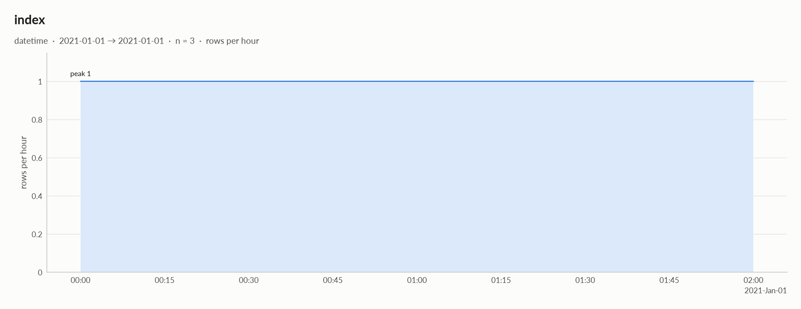

elessar report
3 rows × 8 columns · pandas.DataFrame · read in 0.0s · generated 2026-10-28 11:01 by elessar 0.3.0
Key findings Overall statistics Distributions Data quality Multivariate statistics Preparation plan Attribute statistics Run Key findings
MEDIUM constant column carries no information -> drop itMEDIUM duplicate or non-string column names were renamed (a, a.1, ...)MEDIUM $x$: should-be-numeric: df['$x$'] = elessar.types.parse_numeric(df['$x$'])MEDIUM ../../etc: constant column carries no information -> drop itMEDIUM .1: constant column carries no information -> drop itMEDIUM None: should-be-numeric: df['None'] = elessar.types.parse_numeric(df['None'])MEDIUM col/with/slash: redundant with '$x$' (spearman -1.000) -> keep only oneMEDIUM shape: should-be-numeric: df['shape'] = pd.to_numeric(df['shape'], errors='coerce')Overall statistics
Rows 3 Columns 8 Memory 418 B Potential saving 36 B Pandas dtypes object=2, str=2, category=1, float64=1, datetime64[us, UTC]=1, timedelta64[us]=1 Semantic types constant=3, numeric_string=2, numeric_continuous=1, datetime=1, numeric_discrete=1 Duplicate rows 0 (0.0%) Missing cells 0.0%
Numeric columns at a glance
column count missing mean std min median max skew kurtosis outliers best fit shape3 0.0% -0.2962 1.154 -1.619 0.2245 0.5059 -1.62 - 0.0% - $x$3 0.0% 82.56 20.43 58.97 94.04 94.66 -1.73 - 0.0% - col/with/slash3 0.0% 43 32.51 11 42 76 0.138 - 0.0% - None3 0.0% 48.06 26.38 32.3 33.36 78.51 1.73 - 0.0% -
Distributions
Normality is tested four ways (Shapiro-Wilk on up to 5,000 values, D'Agostino K², Jarque-Bera, Anderson-Darling); the verdict is 'not normal' when at least half of them reject at alpha 0.05. Every candidate distribution is fitted by maximum likelihood and ranked by AIC; the Akaike weight is its relative support among the candidates.
With thousands of values every test rejects even a good fit, so read KS D (the largest gap between the fitted and the observed cumulative distribution) as the size of the misfit: below 0.03 close, below 0.08 fair, above poor. KS p-values are optimistic since the parameters come from the same data. For integer columns the gap is measured on the integer support and the p-value comes from a chi-square goodness-of-fit test.
column n normality tests rejecting best fit parameters weight ΔAIC to 2nd KS D KS p shape shape3 insufficient data - not enough distinct values to fit a distribution $x$3 insufficient data - not enough distinct values to fit a distribution col/with/slash3 insufficient data - not enough distinct values to fit a distribution None3 insufficient data - not enough distinct values to fit a distribution
Data quality
severity column message medium - constant column carries no information -> drop it medium - duplicate or non-string column names were renamed (a, a.1, ...) medium $x$should-be-numeric: df['$x$'] = elessar.types.parse_numeric(df['$x$']) medium ../../etcconstant column carries no information -> drop it medium .1constant column carries no information -> drop it medium Noneshould-be-numeric: df['None'] = elessar.types.parse_numeric(df['None']) medium col/with/slashredundant with '$x$' (spearman -1.000) -> keep only one medium shapeshould-be-numeric: df['shape'] = pd.to_numeric(df['shape'], errors='coerce') info - dtype optimizations save ~36 B: $x$ -> float64, None -> float64 (see quality['dtype_optimizations'] for code)
Memory: suggested dtypes save 36 B
column current suggested saving code $x$str float64 18 B (43%) df['$x$'] = elessar.types.parse_numeric(df['$x$'])Nonestr float64 18 B (43%) df['None'] = elessar.types.parse_numeric(df['None'])
Multivariate statistics
Dimensionality reduction
PCA not applicable: needs at least 3 numeric columns and enough rows (4 columns, 3 rows)
Groups of redundant columns
columns mean |Spearman| keep $x$, col/with/slash 1.00 $x$
Associations between columns
6 pairs tested, 1 significant after Benjamini-Hochberg correction (alpha 0.05).
Strongest associations
column A column B method value 95% CI n p_adj sig $x$ col/with/slash spearman -1.000 3 < 1e-300 * col/with/slash None pearson -0.842 3 0.67 shape $x$ pearson -0.590 3 0.67 shape col/with/slash spearman +0.500 3 0.67 shape None spearman +0.500 3 0.67 $x$ None spearman +0.500 3 0.67
Preparation plan
Cleaning: wrong formats 3. Transformation: decomposition 1, combination 1, rescale 1.
Cleaning
action column why code Wrong formats shapeshould-be-numeric df['shape'] = pd.to_numeric(df['shape'], errors='coerce')Wrong formats $x$should-be-numeric df['$x$'] = elessar.types.parse_numeric(df['$x$'])Wrong formats Noneshould-be-numeric df['None'] = elessar.types.parse_numeric(df['None'])
Transformation
action column why code Decomposition indexa date is not a feature: decompose into calendar parts d = pd.to_datetime(df['index'], errors='coerce')
df['index' + '_year'], df['index' + '_month'] = d.dt.year, d.dt.month
df['index' + '_dow'], df['index' + '_hour'] = d.dt.dayofweek, d.dt.hourCombination $x$, col/with/slash2 columns move together (mean |Spearman| 1.00): keep '$x$', or combine them into one score cols = ['$x$', 'col/with/slash']
df['combined'] = ((df[cols] - df[cols].mean()) / df[cols].std()).mean(axis=1)
# or: df = df.drop(columns=['col/with/slash'])Rescale - numeric scales differ by x31 (col/with/slash vs shape): distance-based models, regularised models and neural nets need common scales from sklearn.preprocessing import RobustScaler, StandardScaler
df[[]] = RobustScaler().fit_transform(df[[]]) # outliers
others = ['shape', 'col/with/slash']
df[others] = StandardScaler().fit_transform(df[others])
Attribute statistics
column type missing distinct alerts shapenumeric_continuous 0.0% 3 0 $x$numeric_string 0.0% 3 0 constant 0.0% 1 0 .1constant 0.0% 1 0 ../../etcconstant 0.0% 1 0 indexdatetime 0.0% 3 0 col/with/slashnumeric_discrete 0.0% 3 0 Nonenumeric_string 0.0% 3 0
shape · numeric_continuousobject · numbers in object column: 3 distinct real values
Profile
type numeric_continuous dtype object values 3 missing 0 (0.0%) distinct 3 (100.0%) memory 96 B
Center
mean -0.2962 95% CI of mean [-3.163, 2.571] median 0.2245 95% CI of median - trimmed mean -0.2962 geometric mean - harmonic mean -
Spread
std 1.154 variance 1.332 sem 0.6664 IQR 1.062 MAD 0.2814 CV 3.897 range 2.125
Quantiles
min -1.619 p1 -1.582 p5 -1.435 p25 -0.6972 p50 0.2245 p75 0.3652 p95 0.4778 p99 0.5003 max 0.5059 sum -0.8885
Shape
skewness -1.62 excess kurtosis - KDE modes - bimodality coef. -
Outliers & counts
IQR fences [-2.291, 1.959] outside fences 0 (0.0%) |z| > 3 0 (0.0%) modified z > 3.5 1 (33.3%) zeros 0 negatives 1 infinite 0
should-be-numeric : df['shape'] = pd.to_numeric(df['shape'], errors='coerce')$x$ · numeric_stringstr · 100% of values are numbers stored as text
Profile
type numeric_string dtype str values 3 missing 0 (0.0%) distinct 3 (100.0%) memory 42 B
Center
mean 82.56 95% CI of mean [31.81, 133.3] median 94.04 95% CI of median - trimmed mean 82.56 geometric mean 80.67 harmonic mean 78.63
Spread
std 20.43 variance 417.3 sem 11.79 IQR 17.84 MAD 0.62 CV 0.2475 range 35.69
Quantiles
min 58.97 p1 59.67 p5 62.48 p25 76.5 p50 94.04 p75 94.35 p95 94.6 p99 94.65 max 94.66 sum 247.7
Shape
skewness -1.73 excess kurtosis - KDE modes - bimodality coef. - decimals 2
Outliers & counts
IQR fences [49.74, 121.1] outside fences 0 (0.0%) |z| > 3 0 (0.0%) modified z > 3.5 1 (33.3%) zeros 0 negatives 0 infinite 0
should-be-numeric : df['$x$'] = elessar.types.parse_numeric(df['$x$'])category · single value: 'x'
Profile
type constant dtype category values 3 missing 0 (0.0%) distinct 1 (33.3%) memory 121 B mode x ×3
Most frequent values
.1 · constantobject · single value: "b'\\x00\\xff'"
Profile
type constant dtype object values 3 missing 0 (0.0%) distinct 1 (33.3%) memory 129 B mode b'\x00\xff' ×3
Most frequent values
value count share b'\x00\xff'3 100.0%
../../etc · constantfloat64 · single value: '0.0'
Profile
type constant dtype float64 values 3 missing 0 (0.0%) distinct 1 (33.3%) memory 24 B mode 0.0 ×3
Most frequent values
value count share 0.03 100.0%
index · datetimedatetime64[us, UTC] · datetime dtype
Profile
type datetime dtype datetime64[us, UTC] values 3 missing 0 (0.0%) distinct 3 (100.0%) memory 24 B
Time
first 2021-01-01 last 2021-01-01 02:00:00 span 0 days 02:00:00 frequency h duplicated timestamps 0 in the future 0 before 1900 0 largest gap 0 days 01:00:00 (2021-01-01 → 2021-01-01 01:00:00)
Rows by hour: 0 1, 1 1, 2 1 
col/with/slash · numeric_discretetimedelta64[us] · timedelta (seconds): integer values (3 distinct)
Profile
type numeric_discrete dtype timedelta64[us] values 3 missing 0 (0.0%) distinct 3 (100.0%) memory 24 B
Center
mean 43 95% CI of mean [-37.76, 123.8] median 42 95% CI of median - trimmed mean 43 geometric mean 32.75 harmonic mean 23.46
Spread
std 32.51 variance 1,057.0 sem 18.77 IQR 32.5 MAD 31 CV 0.7561 range 65
Quantiles
min 11 p1 11.62 p5 14.1 p25 26.5 p50 42 p75 59 p95 72.6 p99 75.32 max 76 sum 129
Shape
skewness 0.138 excess kurtosis - KDE modes - bimodality coef. - decimals 0
Outliers & counts
IQR fences [-22.25, 107.8] outside fences 0 (0.0%) |z| > 3 0 (0.0%) modified z > 3.5 0 (0.0%) zeros 0 negatives 0 infinite 0
None · numeric_stringstr · 100% of values are numbers stored as text
Profile
type numeric_string dtype str values 3 missing 0 (0.0%) distinct 3 (100.0%) memory 42 B
Center
mean 48.06 95% CI of mean [-17.47, 113.6] median 33.36 95% CI of median - trimmed mean 48.06 geometric mean 43.9 harmonic mean 40.72
Spread
std 26.38 variance 695.8 sem 15.23 IQR 23.11 MAD 1.06 CV 0.5489 range 46.21
Quantiles
min 32.3 p1 32.32 p5 32.41 p25 32.83 p50 33.36 p75 55.94 p95 74 p99 77.61 max 78.51 sum 144.2
Shape
skewness 1.73 excess kurtosis - KDE modes - bimodality coef. - decimals 2
Outliers & counts
IQR fences [-1.828, 90.59] outside fences 0 (0.0%) |z| > 3 0 (0.0%) modified z > 3.5 1 (33.3%) zeros 0 negatives 0 infinite 0
should-be-numeric : df['None'] = elessar.types.parse_numeric(df['None'])Run
Source pandas.DataFrame · read in 0.0s Processes 3 for the analysis, 3 for the charts (14 cores available) Time 1.8s (load 0.0s, columns 0.2s, associations 0.1s, quality 0.0s, charts 1.3s) Significance alpha 0.05, Benjamini-Hochberg false discovery rate per family of tests Versions elessar 0.3.0 · Python 3.12.14 · pandas 3.1.0 · numpy 2.5.4 · scipy 1.18.1